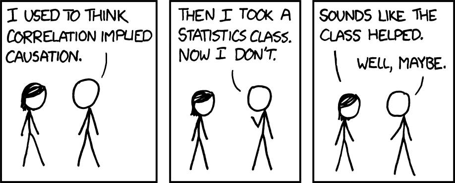
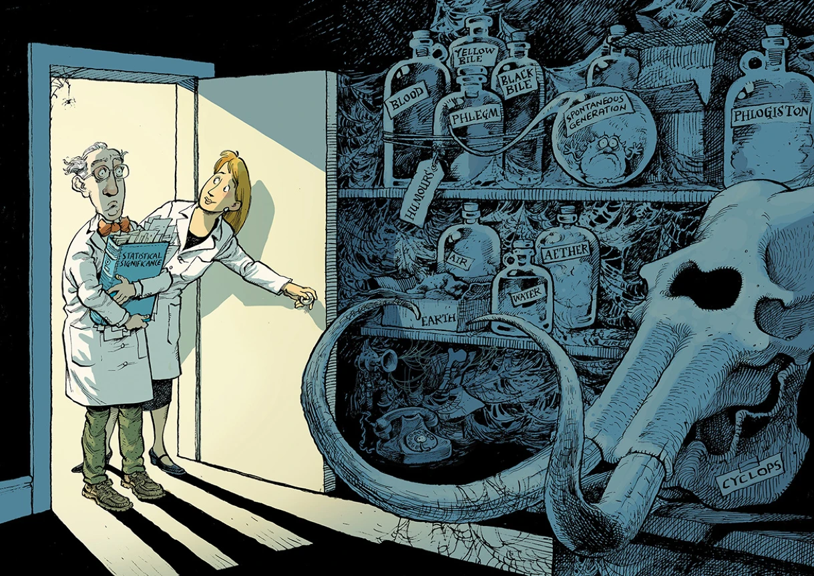

Lessons in Statistical Thinking

Preface
Note to students in Math 300
Up to now, Math 300 has been following the ModernDive textbook. For the remainder of the semester, however, we will continue with the lessons in this little book: Lessons in Statistical Thinking.
Lessons in Statistical Thinking is an update and reconsideration of the concepts and methods needed to extract information from data. Such an update is needed because the canon of traditional introductory statistics texts has long been obsolescent and fails to address the needs of the contemporary data scientist and decision-maker. That canon stems from an influential 1925 book, Ronald Fisher’s Statistical Methods for Research Workers. Research workers of that era typically ran small benchtop or field experiments with a dozen or fewer observations on each of two treatments. A first task with such small data is to rule out the possibility that calculated differences might reflect only the accidental arrangement of numbers into groups.
Perhaps emblematic of the current dissatisfaction with small-data methods is the controversy over “statistical significance.” Although situated at the core of many statistics textbooks, significance testing has little to do with the everyday meaning of “significant” as “important” or “relevant.” This article in the prestigious science journal Nature details the controversy. figure 18.1 reproduces a cartoon from that article that puts the shortcomings of “statistical significance” in a historical context.

Obsession with the mantra, “Correlation is not causation,” is another sign of the obsolescence of the traditional introduction to statistics. Around 1910, the pioneers of statistics were the first to emphasize an important innovation in scientific method: the randomized controlled trial (RCT). Adoption of the RCT in the twentieth century put several branches of science on a new footing. And many statistics instructors see “correlation is not causation” as a slogan pointing to the genuine importance of RCTs. Unfortunately, the mantra has been over-interpreted to mean the impossibility of causal knowledge without RCTs, as in the following cartoon (figure 18.2):
Nowadays, when data are used to inform policy decisions in many areas, the being statistically literate includes the need to make justifiable conclusions about causality. One approach to this was highlighted by the 2019 Nobel Prize in economics; breaking down complex issues of global poverty into smaller, more manageable questions where an RCT is feasible. Another approach, using “natural experiments” was honored by the 2021 Nobel Prize. There is no Nobel in computer science. The equivalent is the Turing Award, which in 2011 was awarded for “fundamental contributions to … probabilistic and causal reasoning.” That such prestigious awards are being given in the last decade demonstrates how recent and how important causal reasoning is and why the fundamentals of causality ought to be part a modern introduction to statistics, and consequently why they are a major theme in these Lessons.
Statistical thinking
The work of today’s data scientists is often to discover novel connections among multiple variables and to guide decision-making. It is common for data to be available in large masses from observations rather than experiments. One common purpose is “prediction,” which might be as simple as the uses of medical screening tests or as breathtaking as machine-learning techniques of “artificial intelligence.” Another pressing need from data analysis is to understand possible causal connections between variables.
The twenty lessons that follow describe a way of thinking that is historically novel, unfamiliar to most otherwise well-educated people, and incredibly useful for making sense of the world and what data can tell us about the world.
For reference: Important word pairs
Many of the vocabulary terms used in statistical thinking come in pairs. We list several such pairs below, in roughly the order they first appear in the Lessons. The pairs can be a reference while reading, but it is also helpful to return to this list to sharpen your understanding of the distinctions.
Explanatory vs response variables. Models (in these Lessons) always involve a single response variable*. In contrast, models can have zero or more explanatory variables.
Variable vs covariate. “Covariate” is another word for an explanatory variable. The word “covariate” signals that the variable is not itself of direct interest to the modeler but puts another explanatory variable in a correct context.
Categorical vs quantitative variables. Always be aware of whether a model’s response variable is categorical or quantitative. When categorical, expect to use zero_one() to convert it to quantitative before modeling. In contrast, explanatory variables can be either categorical or quantitative.
Regression model vs classifier. A regression model always has a quantitative response variable. A classifier has a categorical response variable. In these Lessons, as in much professional use of data, our categorical response variables will have two levels (e.g., healthy or sick, up or down, yes or no). In this situation, regression techniques suffice to build classifiers.
Model vs model function. By “model,” we will almost always mean “regression model.” A regression model, typically constructed by the lm() function, contains various information useful to summarize the model. The “model function” provides the mechanism for one important task, calculating from values from the explanatory variables the corresponding model output.
Model coefficient vs effect size. Model coefficients are numerical parameters. Training determines the appropriate values for the coefficients. In contrast, an effect size describes the relationship between the response variable and a selected explanatory variable.
Point estimate vs interval estimate. A point estimate is a single number. For instance, a model coefficient is a point estimate, as is the output from a model function. In contrast, interval estimates involve two numbers; one specifies the lower end of the interval and the other number specifies the upper end.
Prediction interval vs confidence interval. A prediction interval describes the anticipated range of the actual result for which we have made a prediction, e.g., “tomorrow’s wind will be between 5 and 10 mph.” A confidence interval is often used to express the uncertainty in a coefficient or effect size.